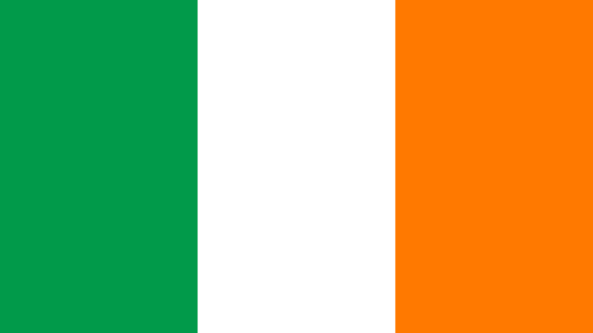

Ирландия занимает бо́льшую часть одноимённого острова в северно-восточной части Атлантического океана и прилегающие мелкие острова. Остров Ирландия — западный из двух крупнейших Британских островов, он расположен между 6° 20'—10° 20' з. д. и 51° 25'—55° 23' с. ш. С востока он омывается Ирландским морем, а также проливами Св. Георга и Северным, с юга — Кельтским морем, а с запада и севера — открытыми водами Атлантического океана. Протяжённость с запада на восток — около 300 км, с севера на юг — около 450 км. Высшая точка — гора Каррантуил (1041 м). Общая площадь территории — около 70,2 тыс. км². Протяжённость границы с Великобританией — 360 км.

Флаг Ирландии является национальным символом Ирландии. Флаг имеет пропорции 1:2 и состоит из трёх полос — зелёной, белой и оранжевой — в последовательности слева направо. Зелёный цвет символизирует католиков, оранжевый — протестантов, белый — мир между двумя общинами.
100 фактов об Ирландии, которые дадут краткое представление об образе жизни ирландцев:
Ирландия очень маленькая страна
Но ирландцы этим очень гордятся. Так же, они гордятся тем, что ирландцев или их потомков можно найти почти везде
В Ирландии 4 провинции( Ольстер, Мунстер, Ленстер, Коннахт) и 26 графств. Еще 6 графств входят в состав провинции Ольстер, но являются частью Великобритании
Ирландцы боготворят Америку и американского президента. Больше только Папу Римского.
Традиционная ирландская еда – картошка в разных видах.
На удивление, ирландцы в большинстве своем предпочитаю мясо, а не рыбу ( несмотря на то, что Ирландия – островная страна)
Ирландский флаг, зеленая белая оранжевая вертикальные полосы ( кстати, не вздумайте сказать оранжевый при ирландце. Это не оранжевый, а золотой) до крайности походит на итальянский флаг( у итальянцев вместо оранжевой красная полоса) и Кот д’Ивуара ( флаг оранжево-бело-зеленый вместо зелено-бело-оранжевого). Но ирландцев это не колышет.
Кстати, такие цвета не случайны. Зеленый и оранжевый означают католиков и протестантов, а белый – это мир между ними ( ибо войны между конфессиями тут велись действительно жестокие)
В Ирландии все довольно дорого, по крайней мере, дороже, чем в Великобритании.
Именно поэтому дублинцы часто ездят закупаться в Белфаст
В школах Ирландии учат ирландский гэльский, но большинство знают его примерно так же, как русские дети знают английский после школы.
Школы в Ирландии в основном только для христиан – католиков либо протестантов. Причем, католики и протестанты не учатся вместе.
В Ирландии очень много иммигрантов из Пакистана
Хотя есть 6 графств, где на гэльском говорят все, ну, или почти все. Это, так называемые, языковые резервации. Кроме того, госслужащие тоже должны хорошо говорить на обоих языках – английском и ирландском гэльском
Транспорт в Ирландии с одной стороны очень развит ( жд, автобусы, самолеты), с другой стороны, большая часть самого интересного банально недостижима без машины.
Туристические маршруты составлены для туристов любящих «галопы по европам» – показывают самое знаменитое, но придется обливаться слезами проезжая мимо не знаменитых, но красот Ирландии
Ирландцы очень любят French fries/ Картошку фри по нашему.
Кроме того, много масла ( любого) можно много , при этом соль ни-ни.
Еще ирландцы очень уважают современное искусство. Парадоксально, но факт.
В Ирландии очень гордятся своими писателями, которых там действительно было много.
Пешеходных зебр здесь почти нет
И знаков пешеходного перехода ( как мы привыкли их видеть) тоже нет. Но пешеходов обычно пропускают.
И есть система оранжевых фонарей – по бокам дороги стоят два высоких мигающих оранжевых фонаря, а между ними часто нарисована пешеходная зебра. Значит – это место, где пешеходы имеют приоритет. Грубо говоря, если вы наступили на зебру – любой автомобиль остановится и пропустит.
По контрасту с Россией, ирландцы очень дружелюбны.
Однако, они далеко не так много улыбаются – просто из-за особенностей английского языка их рот всегда искривлен в полуулыбке, что мы часто принимаем за улыбчивость.
Все знают, что в Ирландии много руин. Точно количество не знает никто .
Большинство магазинов в воскресенье не работает.
А те что работают, работают с двенадцати, а то и с часу дня и до шести вечера.
Кстати, почти все магазины закрываются уже в 6-7 вечера.
Зато в четверг «длинный» день – часть магазинов работает до 9 вечера)
Утром до девяти утра в центре Дублина раздают бесплатные газеты «Метро».
А покупать газеты в Ирландии очень дорого – минимальную цену, которую я видела, была цена на местную газету и которая стоила что-то вроде двух с половиной евро ( порядка ста рублей)
В Дублине очень много такси
Причем почему-то очень много тойот авенсис. Хотя и других марок полно. Но откровенных развалюх нет.
Дублин делится на две части, точнее, три. Центр ( Старый город), южную ( постарее и поспокойнее) и северную. Кстати, в городе гуляет куча шуток про северных и южных дублинцев.
Кстати, в самом Дублине есть два акцента английского, опять же северный и южный. Без определенной тренировки их оба трудно понять.
Практически в любом более ли менее крупном городке можно взять велосипеды напрокат
По непонятной причине Ирландцы обожают индийскую кухню.
По заверениям местных, студенты после выпуска из школы либо учатся за границей, либо учится в Ирландии, и сразу улепетывают за границу
При этом провести старость где либо кроме Ирландии – моветон
Все признают, что курево в Ирландии очень дорогое ( от 5 евро за пачку и выше). Может по этому там относительно мало курящих?
Зато многие пользуют самокрутки ( ИМХО воняет еще хуже)
Женщин за рулем много. Но водят они, как и все женщины, не очень.
Парадоксально, но факт. Все знакомые Ирландцы по секрету мне признавались, что терпеть не могут национальное пиво Ирландии – Гиннес. Причем, признавались они мне в нелюбви к Гиннесу, даже сидя в пабе и блажено потягивая тот самый темный пенный напиток. Наверно, это национальное.
В Ирландии врут все. Так называемая White Lie ложью заведомо не считается. Приятель скажет что знает дорогу к пабу ( выведя в результате плутаний к совершенно другому), подружка скажет что вам идет эта шляпка, а случайный прохожий, даже не имея часов, от балды назовет вам «точное» время. А еще они любят врать насчет своих вкусов – в любом пабе вам расскажут о нелюбви к Гиннесу, в кондитерской – о нелюбви к конфетам и тд и тп
Кстати, дорогу у коренных Ирландцев лучше не спрашивать – они радостно укажут вам путь, в результате которого вы окажетесь от цели еще дальше, чем были. То ли географический кретинизм, то ли еще что.
Интернет есть, но качество оставляет желать лучшего.Самое желанное времяпрепровождение ирландца – оказаться в Нью-Йорке в сезон скидок.
Ирландцы помешаны на скидках и на Америке.
В стране практически не празднуется 8-е Марта
И вообще нет ничего сродни нашему празднику 23-е Февраля.
Раз в году, Где-то в последних числах ноября, всем маленьким детям дозволено не спать до полуночи. В этот день можно смотреть телепрограмму про всевозможные игрушки. После этой программы, многие дети пишут письмо Санта-Клаусу, что они хотят на рождество.
Полицейских в Ирландии относительно мало ( сравниваю с Россией). Они очень корректны и дружелюбны.
Жить в съемном доме – э то нормально
Однако жить в собственной квартире – фу. Либо съемная квартира\дом ( для иммигрантов, студентов, молодых специалистов), либо собственный дом.
При этом цены на хорошую квартиру и плохой собственный дом практически идентичны
В Дублине, да и вообще по стране очень много парков.
Новый Год, в отличие от Рождества, практически не празднуется.
По наблюдением, Ирландия сейчас скорее матриархальная страна – в семьях всем распоряжаются женщины.
Чаевые в ресторанах, как и почти везде, 10%
В стране можно купить практически любой алкоголь. Но есть и запрещенный, самогон из картошки. Гонят такой самогон обычно в сельской местности. Купить можно, но из-под полы.
Сувениры из Ирландии. Обычно это пластиковые фигурки лепреконов, вязаные свитера, пиво\виски\ликер Бейлис, что нибудь с символикой трилистника клевера.
Кстати, символом Ирландии является клевер. Якобы, именно на его примере Св. Патрик объяснил ирландцам идею триединства Бога в православии
Самых почитаемых Святых в Ирландии, вопреки расхожему мнению, целых двое. Всем известный Св. Патрик, и менее известная Св. Бригитта.
Суеверий в стране много, но практически никто в них сейчас не верит
Зато есть много легенд и мифов, например, про Детей Лира ( превратившихся в лебедей) – лебедей реально почитают на всей территории страны
Лет 5 назад, при строительстве дороги , правительство потеряло несколько миллионов евро, так как дорога должны была пролегать мимо озера, в котором жили лебеди. Местные жители доказывали, что эти лебеди особый вид. Именно поэтому постройка дороги застопорилась на несколько недель, пока эксперты определяли к какому виду лебедей относились птицы на том озере. ( кстати, то были самые обычные лебеди))
Все ирландцы сетуют на погоду ( то дождливо, то холодно)
Зато довольно устойчивы к холоду – при +15 и сильном северном ветре, они ходят в майках, шортах и шлепанцах. Для сравнения, все туристы надевают свитер и ветровку как минимум.
Из практического опыта – две футболки в Ирландии ощущаются гораааздо теплее, чем свитер, и даже теплее, чем свитер и футболка.
Кстати, пляжного сезона в стране почти нет, ну или он круглогодичный, если вы морж. Моря реаааально холодные. При этом пляжи большие и красивые.
В больших магазинах ( уровня Теско, Спара, Даннс) есть как обычные кассы, так и кассы самообслуживания.
Самые плохие, встреченные мной дороги, были в Дублине. На втором месте – сельская местность где-то около Коннемары.
День Рождения принято справлять в кафе или ресторанах( особенно у молодежи).
На велосипеде можно ездить круглый год, но зимой – холодно
В Дублине, да и вообще по стране, многие дома стоят на холмах. Если выпадет снег – то жителям официально можно не появляться на работе, если без машины оттуда не выедешь
Потому что шины для зимы тут запрещены, а цепи неудобны
Если выпадает снег – в Дублине, да и вообще по стране, коллапс. Транспортный в том числе
Дороги по стране очень узкие, обычно это ширина двух автобусов + 10 см. Обочины в нашем понимании часто нет – сразу после асфальта либо идет забор, либо деревья. ( не относится к трассам, они такие же как и везде)
Самая красивая местность в Ирландии – на побережье. Там и скалы и холмы и все что хотите. Внутри же остров довольно плоский и невыразительный. Хотя и там есть что посмотреть.
Самые популярные виды спорт – футбол, гэльский футбол и регби.
А еще ирландцы любят ходить ( по паркам, холмам, просто по городу)
Кражи по стране довольно редки ( кроме Дублина)
Именно поэтому ирландцы довольно беспечны – оставляют открытыми окна, а двери часто сделаны из материала, который можно пальцем пробить
Ирландцы практически не держат домашних цветов – все ведь можно высадить в сад.
Ирландия ( оказывается) знаменита своей фармацевтикой и ИТ
Собак в Ирландии любят. Причем среднего размера
Алкоголь в Ирландии разнообразен. Пиво Гиннес, виски – Джеймсон, ликер – Бейлис.
Вино должно быть обязательно иностранным и сухим. Максимум – полусухим.
Зима в стране официально начинается в ноябре, а лето – в мае. Тоже официально, ессно.
Книг они читают довольно много – но, в основном, из библиотек. Очень мало кто держит книги дома.
Везде можно найти ( в сезон) ежевику и грибы, иногда облепиху. Местные их не собирают
В стране очень популярны хобби – смотреть за птицами, фотографировать, ходьба, различные виды спорта.
В стране очень дОроги жилье и услуги.
Медицина в стране, мягко говоря, не очень, несмотря на всю развитую фармацевтику. Да и дорога очень.
Зато довольно хороши ветеринары.
Отдыхать местные предпочитают либо в собственном караване ( «передвижном» доме, размером с вагон и соответствующей возможностью передвижения), либо за границей – погреть косточки
Практически все ирландцы знают слова «Водка», «Перестройка», «Горбачев» и , иногда, «Матрешка»)
Ирландцы свято уверены, что самым лучшим правителем Руси\России всех времен был Горбачев
Если вы скажете 14 часов – вас не поймут. 14 часов по нашему, это 2 часа по ихнему.